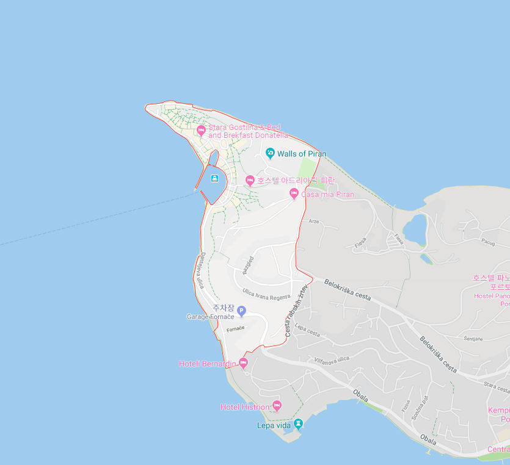
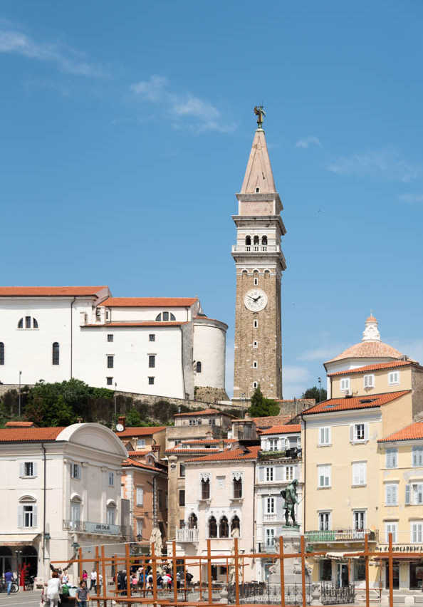
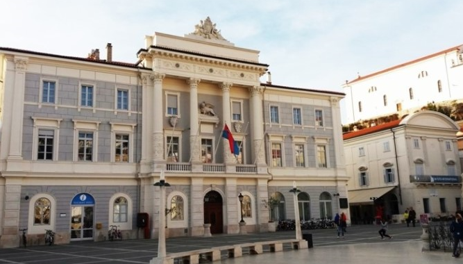
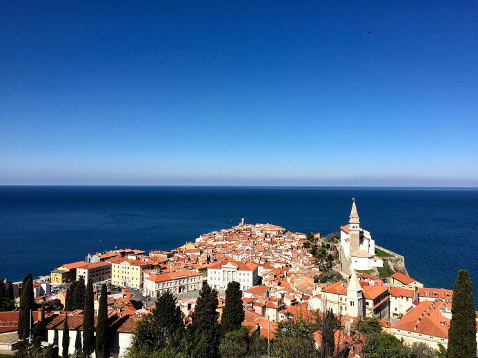

|  | 크로아티아의 남쪽, 이탈리아의 북쪽과 접하고 있는 피란반도 끝에 위치한 해안도시이다. 이탈리아어와 슬로베니아어를 공용어로 사용하고 있다. 오래된 중세도시라 할 만큼 도시 전체가 중세건축물과 풍부한 문화유산으로 둘러싸여 있어, 슬로베니아에서 관광객들이 많이 찾는 도시이다. 빽빽하게 늘어선 15세기 베네치아 고딕양식의 주택과 좁은 거리들, 트리에스테(Trieste) 만(灣)의 아름다운 경관을 볼 수 있는 언덕 위 성당 등이 주요 볼거리다. 또한, 작곡가이자 바이올리니스트 주세페 타르티니(Giuseppe Tartini)의 고향으로 타르티니 광장에는 그의 탄생 200년을 기념하기 위한 청동상이 있다. 1944년 해군함대 코페르(Koper)의 건립을 축하하는 페스티벌이 매해 10월 15일날 개최되며, 국제공항과 요트선착장이 있다. |
|  |  |  |
| 타르티니 광장 | 시청사 |
|---|